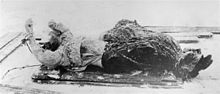

Yusúpov, Purishkévich y el gran duque Dmitri planearon atraer a Rasputín al palacio de Yusúpov con la excusa de que se reuniría con la esposa de este, la gran duquesa Irina Alexándrovna. Así, a pesar de haber recibido una advertencia previa del peligro el mismo 16 de diciembrejul./ 29 de diciembre de 1916greg., Rasputín se presentó en el palacio poco después de medianoche. Allí Yusúpov lo hizo esperar a la gran duquesa, mientras esta supuestamente atendía a otros invitados, en una estancia del sótano donde le sirvió vino y unos pasteles envenenados con cianuro. Exasperado porque el veneno parecía no hacer efecto, Yusúpov le disparó un tiro con una pistola Browning y lo dejó por muerto mientras se preparaba para salir a deshacerse del cadáver. No obstante, Rasputín había sobrevivido y Purishkévich, después de fallar en dos ocasiones, lo derribó con otros dos disparos y le asestó un golpe en la sien. Después arrastraron el cuerpo con cadenas de hierro y lo arrojaron al río Nevá, donde a pesar del veneno, los disparos y el golpe finalmente murió de ahogamiento. Fue encontrado el 18 de diciembre de 1916
